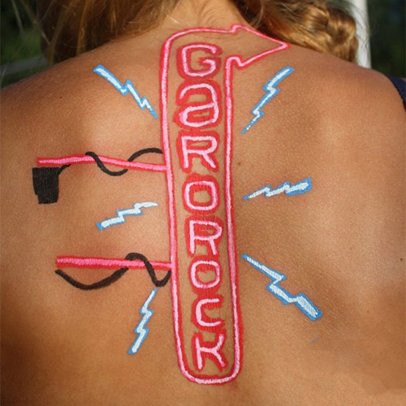

#colors#transgressive #funny#popculture #characters #personalities
With a lot of (off the wall) humour they use POSCA pencils to make your body the support of their messages, more or less serious. They " tattoo" only during celebrations like festivals and you don’t have the choice of the subject of your tattoos… Theses pirates are painters, illustrators, tattoo artists… and they make colorful fake tatoos on Bordeaux, Montreal and Paris.
Go to SkinJackin’s website to see more of their tattoos and when they plan to attack.